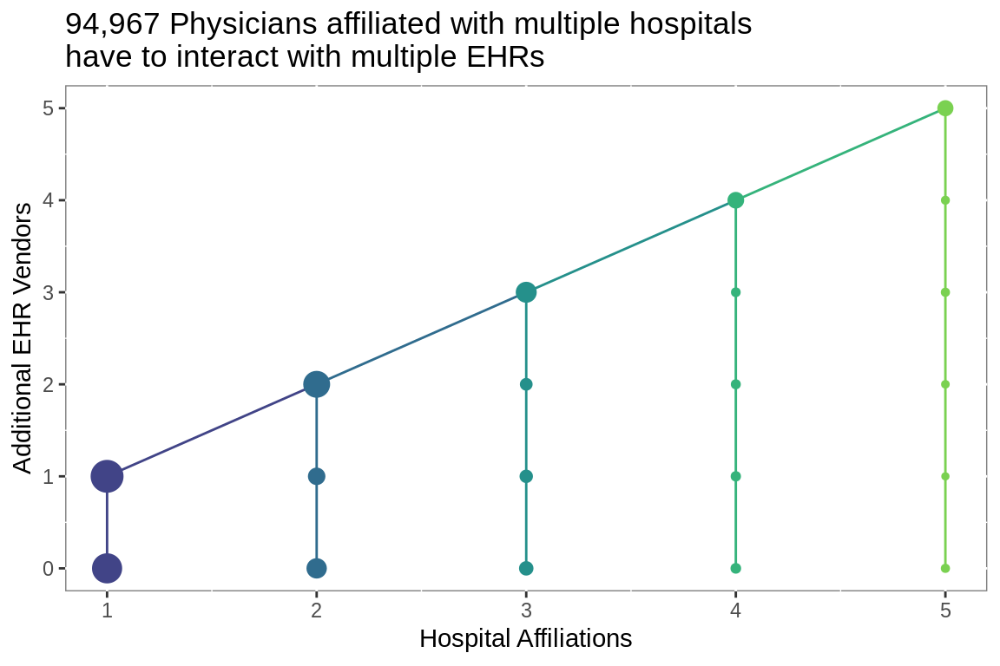
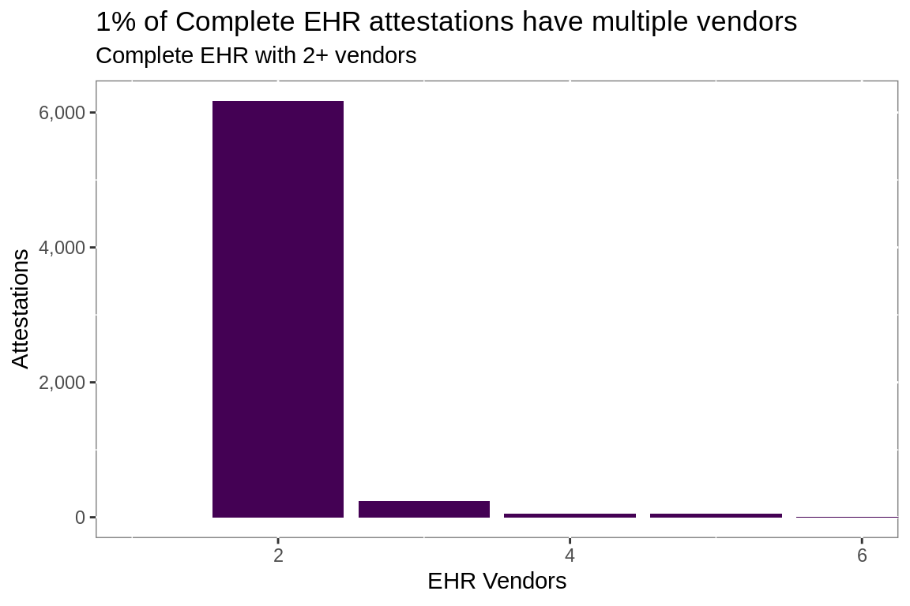

Electronic Health Record Interoperability
# meaningful use reports ----
# cms api url
url.mu <- paste0("http://dashboard.healthit.gov/datadashboard/",
"data/MU_REPORT.csv")
# read Meaningful Use report direct from CMS
mu <- fread(url.mu)
# total attestations
total.attest <- nrow(mu)
# create attestation date from date components
mu[, attested := lubridate::make_date(
as.numeric(Attestation_Year),
as.numeric(Attestation_Month),
1L)]
# clean character variables
mu[, Vendor_Name := str_conv(Vendor_Name, "latin1")]
mu[, EHR_Product_Name := str_conv(EHR_Product_Name, "latin1")]
mu[, CCN := ifelse(nchar(CCN) == 5,
paste0("0", CCN),
as.character(CCN))]
mu[, Id := ifelse(is.na(CCN), NPI, CCN)]
# records per attestation
npi.attest <- mu[,
.N,
by = .(Id, Attestation_Month, Attestation_Year)]
# vendors per attestation
npi.vend <- mu[,
length(unique(Vendor_Name)),
by = .(Id,
Program_Year,
Product_Classification,
attested)]
# number of attestations per Id
npi.year <- mu[, .(min(Attestation_Year),
max(Attestation_Year)),
keyby = Id
][, Years := V2 - V1]
# number of vendors per modular attestation
mod.attest <- npi.attest[npi.vend[Product_Classification ==
"Modular EHR", .(Id)],
on = "Id"][,
Vendors :=
case_when(N == 1 ~ "One",
N == 2 ~ "Two",
N == 3 ~ "Three",
N == 4 ~ "Four",
N == 5 ~ "Five",
TRUE ~ "Six or More")
][, Vendors :=
factor(Vendors,
levels =
c("One",
"Two",
"Three",
"Four",
"Five",
"Six or More"),
ordered = T)]
# fill in gaps in attestation year
expand_yr <- function(x){
out <- as.numeric(seq(min(x), max(x), 1))
}
# get range of attestation years per vendor
# fill gaps
vendor.yrs <- mu[,
.(expand_yr(Attestation_Year),
.N),
keyby = .(Id,
Vendor_Name,
Product_Classification,
Provider_Type)]
setnames(vendor.yrs, "V1", "Attestation_Year")
# prep vendor names for plotting
vendor.yrs[, Vendor_Name :=
case_when(str_detect(Vendor_Name,
"MEDITECH") ~ "MEDITECH",
str_detect(Vendor_Name,
"CPSI|Evident") ~ "CPSI",
str_detect(Vendor_Name,
"Healthcare Management Sys|HMS") ~
"MEDHOST",
str_detect(Vendor_Name,
"HCA") ~ "HCA",
str_detect(Vendor_Name,
"McKesson") ~ "Allscripts",
str_detect(Vendor_Name,
"Siemens") ~ "Cerner",
TRUE ~
str_remove_all(Vendor_Name,
" Corporation|, LLC"))]
# attestations by vendor
vendor <- vendor.yrs[, length(unique(Id)),
keyby = .(Vendor_Name,
Attestation_Year,
Provider_Type)]
# top vendors by attestation
# use to limit vendors for plotting
top.vendors <- vendor[, Installs := max(V1),
keyby = .(Vendor_Name, Provider_Type)
][, .(dense_rank(desc(Installs)),
Installs,
Vendor_Name),
keyby = Provider_Type]
top.vendors[, Vendor :=
ifelse(Provider_Type == "Hospital" & V1 < 6 |
Provider_Type == "EP" & V1 <= 8,
Vendor_Name, "Other")]# hospital affiliations ----
# Get Physician Compare data via API call to CMS
# will read in all variables as character as CCN5 screws up
# vartype hueristics
cls <- rep("character", 41)
# call data directly from CMS
aff.hosp <- fread("https://data.medicare.gov/api/views/mj5m-pzi6/rows.csv?accessType=DOWNLOAD", colClasses = cls)
total.docs <- nrow(aff.hosp)
# affiliated column names
ccn <- paste("Hospital affiliation CCN", 1:5)
lbn <- paste("Hospital affiliation LBN", 1:5)
# variables of interest
# limiting identifing variables to Ids
Vars <- c("NPI",
ccn,
lbn)
# limit to target variables
aff.hosp <- aff.hosp[, Vars, with = FALSE]
# prepare NPI for matching
aff.hosp <- aff.hosp[, NPI := as.integer(NPI)]
# limit to unique NPI
aff.hosp <- unique(aff.hosp, by = Vars)
# reshape data----
# melt is the equivalent of gather/pivot
aff.hosp <- melt(aff.hosp, measure = patterns("CCN",
"LBN"),
value.name = c("MedicareNumber",
"Hospital"))
aff.hosp[,variable := NULL]
# limit to providers reporting affiliations
aff.hosp <- aff.hosp[MedicareNumber != "",]Looking at the number of systems that must coordinate to achieve interoperability between a single hospital and it’s affiliated physicians illustrates the magnitude of the effort required to achieve interoperability on a national level.
# affiliations with mu records
aff.hosp2 <- aff.hosp[NPI %in% mu$NPI &
MedicareNumber %in% mu[!is.na(mu$CCN),]$CCN]
# unique
aff.hosp2 <- unique(aff.hosp2)
setkeyv(aff.hosp2, c("NPI", "MedicareNumber"))
# ep vendors
mu.ep <- mu[Provider_Type == "EP" &
NPI %in% aff.hosp2$NPI, .(NPI, Vendor_Name)]
mu.ep <- unique(mu.ep)
setkey(mu.ep, NPI)
# hosp vendors
mu.hosp <- mu[Provider_Type == "Hospital" &
CCN %in% aff.hosp2$MedicareNumber,
.(CCN, Vendor_Name)]
mu.hosp <- unique(mu.hosp)
setnames(mu.hosp, c("MedicareNumber",
"Vendor_Name"))
setkey(mu.hosp, MedicareNumber)
# joins
mu.aff <- aff.hosp2[mu.ep,
.(MedicareNumber, Vendor_Name),
by = .EACHI]
setkey(mu.aff, MedicareNumber)
mu.aff <- mu.aff[mu.hosp,
allow.cartesian = T]
mu.aff <- unique(mu.aff)
mu.aff[, Same := i.Vendor_Name == Vendor_Name]
mu.same <- unique(mu.aff[, .(NPI, MedicareNumber, Same)])
aff.cnt <- aff.hosp[,
.(length(unique(MedicareNumber))),
keyby = NPI]
hosp.cnt <- aff.hosp[,
.(length(unique(NPI))),
keyby = MedicareNumber]
aff.mu.avg <- mu.aff[,
.(length(unique(Vendor_Name)),
length(unique(NPI)),
mean(Same)),
keyby = "MedicareNumber"]
setnames(aff.mu.avg, c("MedicareNumber",
"Vendors",
"Affiliated",
"InterOp"))
aff.mu.npi <- mu.aff[,
.(max(as.numeric(Same)) == 0),
keyby = .(NPI, MedicareNumber)
]
aff.mu.npi.cnt <- aff.mu.npi[,
.(length(unique(MedicareNumber)),
sum(V1)),
keyby = NPI]
setnames(aff.mu.npi.cnt, c("NPI",
"Affiliated",
"Vendors"))Since April 2011 235,806 providers reported their EHR vendor and affiliation with at least one of 4,381 hospitals.
Hospitals
Hospitals have to coordinate with an additional EHR system for every 3 affiliated physicians.
aff.mu.avg %>%
mutate(grp = "group") %>%
ggplot(aes(Affiliated, Vendors))+
geom_jitter(shape = ".",
alpha = 3/4)+
geom_smooth(aes(color = grp),
show.legend = F,
size = 1.25,
span = 1)+
scale_y_continuous(limits = c(1, 50))+
scale_x_log10(limits = c(1, 1000))+
scale_color_viridis_d(begin = 0.0,
end = 0.1)+
labs(title = paste("Affiliated physicians use",
round(mean(aff.mu.avg$Vendors)),
"disparate EHR systems on average"),
x = "log10(Affiliated Physicians)",
y = "Physician EHR Vendors")+
theme(panel.background =
element_rect(fill = "white",
colour = "grey50"))
Providers
68% of physician affiliations involve multiple EHR vendors.
Single Affiliation
aff.mu.npi.cnt %>%
filter(Affiliated == 1) %>%
mutate(Same = Vendors == 0) %>%
group_by(Same) %>%
summarize(n = n()) %>%
ungroup() %>%
mutate(label = paste0(round(n / sum(n), 2)*100, "%")) %>%
ggplot(aes(Same, n))+
geom_col(aes(fill = Same), show.legend = F)+
geom_text(aes(label = label,
color = Same),
nudge_y = -5000,
fontface = "bold",
size = 5,
show.legend = F)+
scale_fill_viridis_d(option = "D",
begin = 0.4,
end = 0.8)+
scale_color_viridis_d(direction = -1,
option = "D",
begin = 0.4,
end = 0.8)+
scale_y_continuous(labels = scales::comma)+
labs(title =
paste(comma(nrow(aff.mu.npi.cnt[aff.mu.npi.cnt$Affiliated ==
1,])),
"Physicians reporting a single affiliation"),
y = "Physicians",
x = "Reported Use of same EHR as Affiliated Hospital")+
theme(panel.background =
element_rect(fill = "white",
colour = "grey50"))
Multiple Affiliations
aff.mu.npi.cnt %>%
filter(Affiliated > 1) %>%
mutate(Same = Vendors == 0) %>%
select(NPI, Same) %>%
unique() %>%
group_by(Same) %>%
summarize(n = n()) %>%
ungroup() %>%
mutate(label = paste0(round(n / sum(n), 2)*100, "%")) %>%
ggplot(aes(Same, n))+
geom_col(aes(fill = Same), show.legend = F)+
geom_text(aes(label = label,
color = Same),
nudge_y = -5000,
fontface = "bold",
size = 5,
show.legend = F)+
scale_fill_viridis_d(begin = 0.4,
end = 0.8)+
scale_color_viridis_d(direction = -1,
begin = 0.4,
end = 0.8)+
scale_y_continuous(labels = scales::comma)+
labs(title =
paste(comma(nrow(aff.mu.npi.cnt[aff.mu.npi.cnt$Affiliated !=
1,])),
"Physicians reporting multiple affiliations"),
y = "Physicians",
x = paste0("Reported Use of same EHR ",
"as at least 1 Affiliated Hospital"))+
theme(panel.background =
element_rect(fill = "white",
colour = "grey50"))Additional EHRs
aff.mu.npi.cnt %>%
mutate(grp = "group") %>%
ggplot(aes(Affiliated, Vendors)) +
stat_summary(fun.data = "median_hilow",
geom = "linerange",
mapping = aes(color = Affiliated),
show.legend = F)+
stat_summary(fun.y = "median",
geom = "line",
mapping = aes(color = Affiliated),
show.legend = F)+
stat_sum(geom = "point",
mapping = aes(color = Affiliated),
show.legend = F)+
scale_color_viridis_c(begin = 0.2,
end = 0.8)+
scale_y_continuous(labels = scales::comma)+
scale_x_continuous(labels = scales::comma)+
labs(title =
paste0(comma(nrow(aff.mu.npi.cnt[Affiliated > 1 &
Vendors > 0])),
" Physicians affiliated with multiple hospitals",
"\nhave to interact with multiple EHRs"),
x = "Hospital Affiliations",
y = "Additional EHR Vendors") +
theme(panel.background =
element_rect(fill = "white",
colour = "grey50"))
By Hospital Vendor
mu.vend <- mu.aff[, .(length(unique(NPI)),
length(unique(Vendor_Name))),
keyby = .(MedicareNumber, i.Vendor_Name)
]
mu.vend <- mu.vend[mu[, .I[attested == max(attested)],
by = .(CCN, Vendor_Name)]$V1]
mu.vend <- unique(mu.vend)
setnames(mu.vend, c("MedicareNumber",
"Vendor_Name",
"Affiliated",
"Vendors"))
mu.vend$Vendor <- case_when(str_detect(mu.vend$Vendor_Name,
"MEDITECH") ~ "MEDITECH",
str_detect(mu.vend$Vendor_Name,
"CPSI|Evident") ~ "CPSI",
str_detect(mu.vend$Vendor_Name,
"Healthcare Management Sys|HMS") ~
"MEDHOST",
str_detect(mu.vend$Vendor_Name,
"HCA") ~ "HCA",
str_detect(mu.vend$Vendor_Name,
"McKesson") ~ "Allscripts",
str_detect(mu.vend$Vendor_Name,
"Siemens|Cerner") ~ "Cerner",
TRUE ~
str_remove_all(mu.vend$Vendor_Name,
" Corporation|, LLC"))
mu.vend <- mu.vend[Vendor %in%
top.vendors[top.vendors$Provider_Type ==
"Hospital", ]$Vendor]
mu.vend %>%
ggplot(aes(Affiliated, Vendors))+
geom_jitter(shape = ".", alpha = 2/3)+
geom_smooth(aes(color = Vendor),
fullrange = T,
se = F)+
scale_x_log10()+
scale_color_viridis_d()+
guides(color = guide_legend(title = "Hospital\nVendor"))+
labs(title = "Hospital Vendor Impact",
x = "log10(Affiliated Physicians)",
y = "Physician EHR Vendors")+
theme(panel.background =
element_rect(fill = "white",
colour = "grey50"),
legend.key.size = unit(2, "lines"))Vendor Market Share
Inpatient
n.hosp <- sum(
vendor[vendor$Vendor_Name %in%
top.vendors[top.vendors$Provider_Type ==
"Hospital" &
top.vendors$Vendor != "Other",
]$Vendor_Name &
vendor$Provider_Type == "Hospital" &
vendor$Attestation_Year == 2017, ]$V1)
n.ep <- sum(vendor[vendor$Vendor_Name %in%
top.vendors[top.vendors$Provider_Type !=
"Hospital" &
top.vendors$Vendor != "Other",
]$Vendor_Name &
vendor$Provider_Type != "Hospital" &
vendor$Attestation_Year == 2017, ]$V1)
vendor %>%
inner_join(top.vendors %>%
filter(Vendor != "Other") %>%
select(Vendor_Name, Provider_Type, Vendor)) %>%
filter(Provider_Type != "EP") %>%
filter(Attestation_Year < 2018) %>%
ggplot(aes(Attestation_Year, V1))+
geom_smooth(aes(group = Vendor,
color = fct_reorder2(Vendor,
Attestation_Year,
V1)),
span = T,
size = 1.3,
se = F)+
scale_y_continuous(labels = scales::comma)+
guides(color = guide_legend(title = NULL))+
labs(title = "Hospital Attestations",
x = "Attestation Year",
y = "Hospitals",
caption = paste0("n = ", comma(n.hosp)))+
scale_color_viridis_d()+
scale_y_continuous(labels = scales::comma)+
theme(panel.background =
element_rect(fill = "white",
colour = "grey50"),
legend.key.size = unit(2, "lines"))
Outpatient
vendor %>%
inner_join(top.vendors %>%
filter(Vendor != "Other") %>%
select(Vendor_Name, Provider_Type, Vendor)) %>%
filter(Provider_Type == "EP") %>%
filter(Attestation_Year < 2018) %>%
ggplot(aes(Attestation_Year, V1))+
geom_smooth(aes(group = Vendor,
color = fct_reorder2(Vendor,
Attestation_Year,
V1)),
span = 1,
size = 1.3,
se = F)+
scale_y_continuous(labels = scales::comma)+
guides(color = guide_legend(title = NULL))+
labs(title = "Eligible Provider Attestations",
x = "Attestation Year",
y = "Eligible Providers",
caption = paste0("n = ", comma(n.ep)))+
scale_color_viridis_d()+
scale_y_continuous(labels = scales::comma)+
theme(panel.background =
element_rect(fill = "white",
colour = "grey50"),
legend.key.size = unit(2, "lines"))
Data
Two publicly available data sets from the Centers for Medicare and Medicaid Services:
1. EHR Products Used for Meaningful Use Attestation
2. Physician Compare National Downloadable File
Meaningful Use Report
356,996 Eligible Providers and 4,674 Hospitals made 1,189,492 attestations to the meaningful use of Electronic Health Records from 2011 to 2018. Just over half (59%) of providers attested for 3 or more years.
Attestations
npi.attest %>%
filter(Attestation_Year < 2018) %>%
ggplot(aes(factor(Attestation_Year)))+
geom_bar(aes(fill = Attestation_Year),
width = 1,
color = "#FFFFFF")+
labs(title = "Attestations by Year",
x = NULL,
y = NULL)+
guides(fill = "none")+
scale_fill_viridis_c()+
scale_y_continuous(labels = scales::comma)+
theme(panel.background =
element_rect(fill = "white",
colour = "grey50"))
npi.vend %>%
mutate(Product_Classification =
ifelse(Product_Classification == "", "Not Reported",
Product_Classification)) %>%
ggplot(aes(x = factor(1), fill = Product_Classification))+
geom_bar(width = 1,
color = "#FFFFFF")+
labs(title = "Product Classification",
x = NULL,
y = NULL)+
coord_polar(theta = "y", direction = -1)+
guides(fill = guide_legend(title = NULL))+
scale_fill_viridis_d()+
theme_void()
Atypical Attestations
ggplot(mod.attest,
aes(x = factor(1),
fill = Vendors))+
geom_bar(width = 1,
color = "#FFFFFF")+
labs(title = "Number of Vendors per Modular EHR attestation",
subtitle = paste0(round(nrow(mod.attest[N > 3]) /
nrow(mod.attest), 2) *100,
"% have 4 or more vendors"),
x = NULL,
y = NULL)+
coord_polar(theta = "y", direction = -1)+
theme_void()
atypical <- round(nrow(npi.vend[V1 > 1 &
Product_Classification == "Complete EHR"]) /
nrow(npi.vend[Product_Classification ==
"Complete EHR"]), 2)*100
npi.vend[V1 > 1 &
Product_Classification == "Complete EHR" , ] %>%
ggplot(aes(V1))+
geom_bar(aes(fill = Product_Classification), show.legend = F)+
labs(title = paste0(atypical,
"% of Complete EHR attestations have",
" multiple vendors"),
subtitle = "Complete EHR with 2+ vendors",
x = "EHR Vendors",
y = "Attestations")+
scale_fill_viridis_d()+
scale_y_continuous(labels = scales::comma)+
scale_x_continuous(labels = as.integer)+
coord_cartesian(xlim = c(1, 6))+
theme(panel.background =
element_rect(fill = "white",
colour = "grey50"))
Physician Compare
The physician compare data contains 2,033,311 records. 648,050 Providers reported affiliations with 4,735 hospitals to CMS.
Hospitals
hosp.cnt %>%
mutate(grp = "group") %>%
ggplot(aes(V1))+
geom_histogram(aes(fill = grp),
show.legend = F,
color = "#FFFFFF")+
scale_fill_viridis_d(begin = 0.6,
end = 0.7)+
scale_y_continuous(labels = scales::comma)+
scale_x_continuous(labels = scales::comma)+
labs(title = "Number of Affiliated Physicians",
y = "Hospital",
x = "Affiliated Physicians")+
theme(panel.background =
element_rect(fill = "white",
colour = "grey50"))
Physician Affiliations
aff.cnt %>%
group_by(V1) %>%
summarise(n = n()) %>%
ggplot(aes(V1, n))+
geom_col(aes(fill = n),
color = "#FFFFFF",
width = 1, show.legend = F)+
scale_fill_viridis_c(begin = 0.2,
end = 0.8)+
scale_y_continuous(labels = scales::comma)+
labs(title = "Number of Hospital Affiliations",
y = "Physicians",
x = "Hospital Affiliations")+
theme(panel.background =
element_rect(fill = "white",
colour = "grey50"))